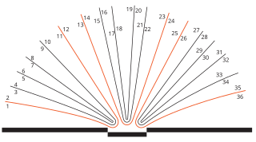
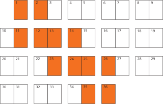
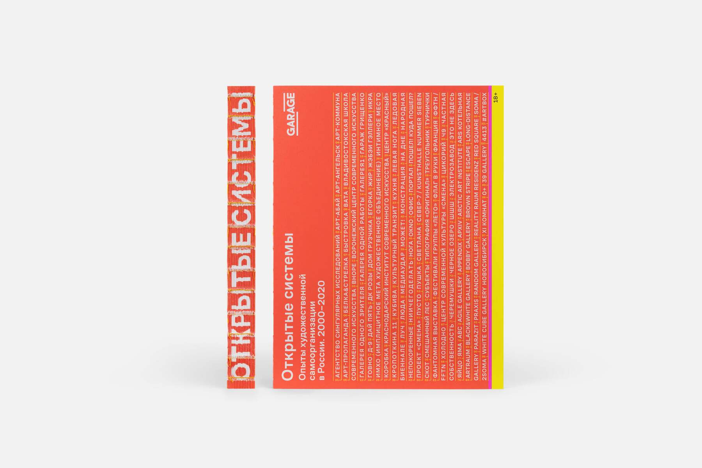
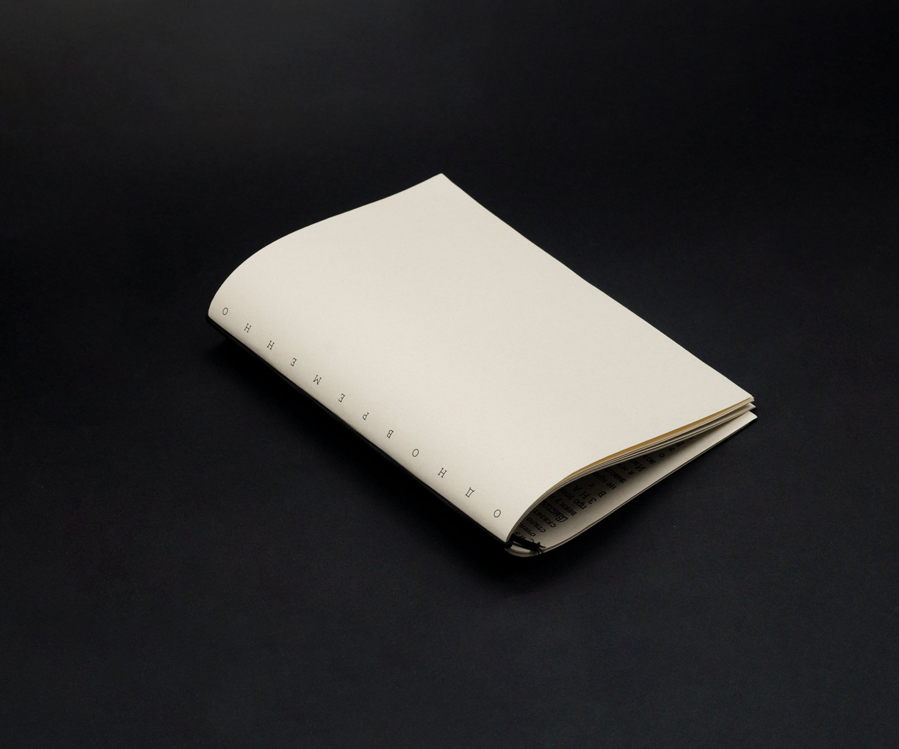
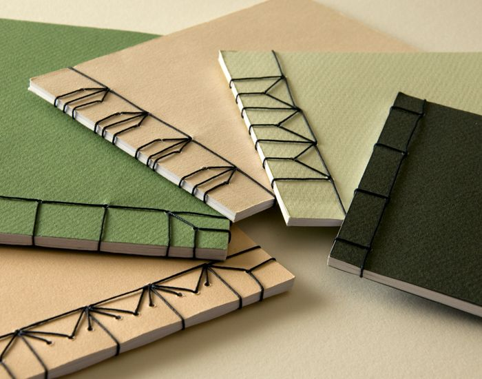
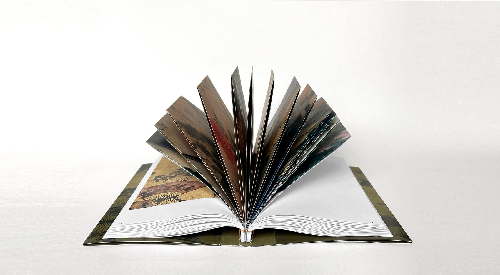
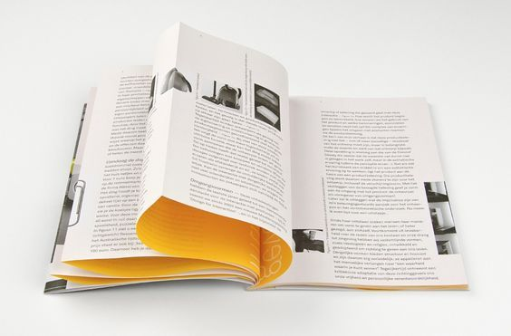

Анатомия книги
В этой главе мы узнаем, почему количество страниц должно быть кратно двум или четырем, а также получим понимание того, как наш дизайн будет сверстан в материальную книгу.
Книга делится на два основных элемента: книжный блок и переплёт. Эти вещи создаются отдельно и потом скрепляются между собой.

←
1
Анатомия книги
Дизайн: Татьяна Андреева. Cсылка на проект
Книжный блок
Возьмём несколько листов бумаги. Согнём каждый пополам и вложим друг в друга — так мы получим тетрадь. Сложенные в стопку тетради образуют книжный блок. Их склеивают и, при желании, перед этим прошивают между собой. Блок готов!1
Способов скрепления листов существует много, но один из самых популярных — КШС (клеевое швейное скрепление). Такие переплёты, где листы сшиваются между собой, можно сделать своими руками. Есть ещё один способ — КБС (клеевое бесшовное соединение).

←
2
Последовательная сборка книжного блока
Выбор способа скрепления определяет, сколько страниц будет в твоей книге. Например, если ты хочешь прошить свою книгу, то количество страниц должно быть кратно четырём. Но в любом случае кол-во страниц в книге должно быть кратно двум.
Разберёмся, почему так происходит. Лист — это минимальный кирпичик, из которого собирается книжный блок. Лист имеет две поверхности: верхнюю и нижнюю. Каждая сторона — это одна страница в книге. В нашей книге пришлось согнуть его, чтобы создать тетрадь. Из-за сгиба получаем уже 4 поверхности: по две с каждой из двух сторон. Выходит, что на одном листе помещается 4 страницы. Так как он является минимальным кирпичиком, из которого собирается блок, то вся книга будет состоять из листов по 4 страницы. Существуют другие способы создания книжного блока, где не нужно сгибать бумагу. Например, в дешёвых книгах все страницы просто приклеиваются к корешку, а значит их не нужно сгибать для сшивки. Поэтому на одном листе размещается только 2 страницы. В такой книге количество полос будет кратно двум.
Эксперименты. Знание этих основ открывает перед тобой возможность экспериментировать с телом книги, вводить яркие решения. Например, вставить в книгу листы другого цвета3. При этом важно брать бумагу той же плотности, что и другие листы в блоке, иначе более толстый лист разрушит равномерную конструкцию тетрадей. Такая книга быстрее станет расхлябанной и неопрятной. В целом, даже такая задача решается. Решается она несколькими способами, творчески. Главное правило — тетради книжного блока должны быть одинаковые по ширине. Первый способ: если в твоей книге тетрадь состоит, к примеру, из 4‑х листов, ты можешь заменить одну тетрадь в блоке одним очень плотным листом. В сложенном состоянии его ширина должна быть равна ширине обычной тетради. Второй вариант — комбинировать разные тетради. Например, в одной останется 4 обычных листа, а во второй будет 2 обычных листа, вложенные в один плотный лист.

←
3
Распределение страниц по цветным листам

←
То же самое, но в формате раскадровки книги
Как ты уже можешь догадаться, в твердом переплете не получится бездумно делать вставки из другой бумаги. Необходимо грамотно распланировать контент, чтобы нужные страницы попадали именно на цветные листы. Если ты хочешь систематически включать в книжный блок более плотную бумагу, например, выделять шмуцтитулы4 ощутимо другой плотности, при выборе твердого переплета это требует очень виртуозного распределения контента по книге.

←
4
Розовые листы слева – это бумага, крашенная в массе
Лист оранжевого цвета является обычным листом, запечатанным цветом. Это заметно по верхнему срезу книжного блока – у оранжевого листа срез белый
Если не хватает ширины разворота, ты можешь продлить страницы и сделать клапан. То есть печатный лист, грубо говоря, можно увеличивать по длине. В этом случае нам также важно, чтобы появившийся лист не нарушал ширину тетради. Также важно будет рассчитать расположение разворота с клапаном, чтобы расположить его в правильных тетрадях.
Если хочется ввести в книжный блок прозрачные страницы, стоит заранее советоваться с типографом и печатником, потому что такой материал, как калька может не сшиваться в блок, а приклеивается к одной из его страниц. Другими словами, калька не будет являться частью конструкции книжного блока.5

←
5
① вшивка листа
в тетрадь
②
Вклейка половины листа в тетрадь
Переплет
В просторечье его называют обложкой, но на самом деле переплёт представляет собой нечто большее и подразумевает под собой два понятия. Во-первых, переплет — это тип скрепления страниц в книжном блоке. Во-вторых, это конструкция, на которой располагается обложка — яркий и красивый графический материал, который презентует книгу.
В первую очередь он существует для того, чтобы защищать блок от износа. Выбор зависит от ответа на следующие вопросы: сколько книга должна прослужить? где её будут использовать? какой объем страниц у книги?
Если ты делаешь студенческий проект, то книга, скорее всего, должна пережить всего лишь один просмотр. Для неё подойдёт любой переплёт, который тебе будет интересно попробовать, например, открытый6. Если ты хочешь, чтобы книгу читали и передавали от человека к человеку, стоит остановиться на закрытых переплётах: твёрдом или мягком. Твёрдый переплёт сохранит страницы дольше, хотя сам может потрепаться, если его обклеить марким материалом: светлой бумагой или черной с матовым покрытием. Процесс решения этих задач довольно творческий. Можно подобрать менее маркие материалы для обложки, а можно добавить книге суперобложку, чтобы сам переплёт не пачкался. Мягкая обложка не подходит для объемных толстых книг, так как она не выдержит вес страниц.

←
6
Открытый корешок в книге «Открытые системы»
Cсылка на книгу
Виды переплетов. Рассмотрим 4 самых популярных типа переплетов: как листы скрепляются в единый книжный блок и как его в каждом из вариантов прикрепляют к обложке.
←
7
Один из вариантов переплета
На рисунке7 изображена переплетная крышка твердого переплета, где страницы необходимо сшивать между собой. В твердом переплете книжный блок прикрепляют к переплетной крышке двумя плотными листами бумаги — форзацами. Аналогично делают в открытом переплете, при условии, что переплетные крышки твердые. В подавляющем большинстве книг переплетные крышки, то есть обложка, выступают за границы книжного блока, тем самым защишая страницы от износа. Так как обложка и книжный блок являются разными частями конструкции, их нужно создавать в разных файлах. Отдельно печатают и сшивают книжный блок, и отдельным макетом отправляют на печать обложку.
←
8
Один из вариантов переплета
Существуют решения, где страницы складываются друг в друга. Этот способ носит название «внакидку». Такая книга по конструкции похожа на одну большую тетрадь.8 Развороты чаще всего скрепляются скобой или ниткой. Формально в подобном издании нет переплета, а обложка располагается на внешнем листе.9 Такую книгу или, лучше сказать, брошюру обычно отправляют на печать одним файлом, так как обложка является частью книжного блока. Так же, как и в твердом переплете, в такой книге количество страниц должно быть кратно четырем. Для книги внакидку отлично подходит тонкая бумага, так как она позволяет использовать большое количество лситов. Плотная бумага с каждым новым листом будет все больше превращать конструкцию в веер.


←
9
Внакидку
←
10
Мягкий переплет
Следующий тип переплета — мягкий. Мягким переплетом называются книги, в которых книжный блок обклеивается листом плотной бумаги. Такая конструкция позволяет использовать новый для нас способ скрепления листов между собой: страницы приклеиваются по одной к корешку. Общее количество полос в книге получается кратно двум. Как ты можешь видеть на схеме,10 между первой полосой и обложкой тоже есть клей. Первая и последняя полоса книжного блока прикрепляются к мягкой обложке подобно тому, как форзац приклеивается к переплетной крышке. Существует чуть более прочный вариант такого переплета, при котором страницы и сшиваются, и склеиваются, и тут снова нужна кратность четырем в количестве страниц. Как было сказано чуть ранее, понятие «мягкий переплет» собирает под собой не книги с особым способом скрепления страниц, сколько выбор мягкого переплетного материала. Такая книга может состоять из отдельного книжного блока, который присоединяется к переплету через форзацы, а не через корешок.
←
11
Втачку
Последний тип скрепления страниц – втачку. Он используется в эффектном японском переплете. Страницы складываются в стопку в книжный блок и прошиваются сбоку насквозь нитками или лентами (на рисунке11 они обозначены черной линией). Нитки образуют характерный узор12 на книге. Японский переплет характеризуется не столько креплением блока втачку, сколько своими страницами-петлями. Благодаря втачке сгиб листа можно повернуть не к корешку, а к внешнему срезу. Традиционно в этом переплете корешок остается открытым.

←
12
Традиционное оформление японского переплета

←
13
Японский переплет
Книга о японских складных веерах. Дизайн: Анна Киреева.

Понимание анатомии книги позволяет эксперименитровать с переплетами и комбинировать их друг с другом. Например, блок из японского переплета можно обернуть в мягкую обожку. В этом случае мы также клеим корешок обложки к корешку книжного блока. Или, как в варианте на предыдущей странице, традиционный японский переплет можно обернуть в суперобложку для презентабельности и сохранности издания. Мягкая обложка может превратиться в твердую, когда на заднюю и переднюю стороны блока клеят переплетные крышки.

←
14
Эксперименты
Мы рассмотрели основные виды переплетов. На самом деле, существует много других достаточно популярных вариантов, которые появляются как раз благодаря подобным экспериментам. Далеко не все типографии готовы напечатать такие необычные решения. Можно договориться о печати, сшивке и проклейке текстового блока, а переплет подобрать и сделать самостоятельно. Можно попросить помощи у коллег-дизайнеров, которые увлекаются сшивкой книг и переплетами, таких ребят много в школах дизайна.

←
17
Совет по теме конструкции книги. Макет должен начинаться с одиночной страницы16. Если ты хочешь включить в книгу клапаны, длину страницы можно увеличить при помощи инструмента Page Tool17

←
16
Раскадровка книги